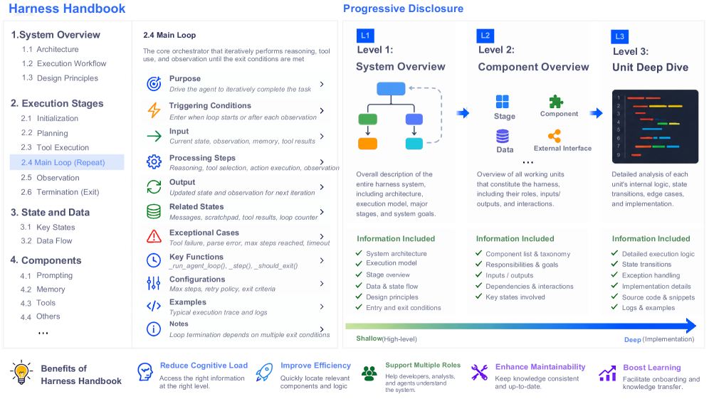
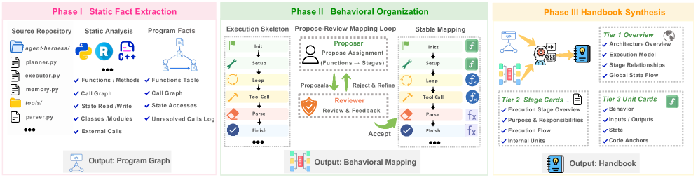

Harness Handbook: Readable, Navigable, Editable Harnesses
TL;DR
- Harness Handbook (Wang et al., arXiv 2607.13285, 29 pages) identifies behavior localization — finding where in a large harness codebase a described behavior lives — as the central bottleneck in evolving agent harnesses, and builds a behavior-centric representation of the repo, synthesized automatically via static analysis plus LLM-assisted structuring, that links each runtime behavior to verified source locations.
- A companion search procedure, Behavior-Guided Progressive Disclosure (BGPD), walks an agent from high-level behavior descriptions down to implementation details, following call and shared-state links, and verifies candidate edit sites against live source.
- On modification requests drawn from two open-source harnesses (Codex and Terminus-2), handbook-assisted planning raised plan win rates by 10.0 and 18.9 points while cutting planner token use by 12.7% and 8.6%, with the largest gains on scattered edit sites, rarely executed paths, and cross-module interactions.
Why this matters
A modern agent's capability is model × harness: the harness constructs prompts, manages state, invokes tools, and coordinates execution. Models, APIs, environments, and requirements all churn, so the harness must be continually modified — harness evolution is now routine engineering, and increasingly it is done by coding agents. But there is a structural mismatch: modification requests describe what the system should do ("retry tool calls with backoff when the sandbox restarts"), while repositories are organized by where code lives (files, modules). In production harnesses, one behavior is typically distributed across distant files, functions, and pieces of shared state, and the codebases are large and tightly coupled. Code search, repo indexing, and long-context reading help you inspect, but the behavior-to-code mapping still has to be reconstructed by hand (or by an agent burning tokens) on every request.
That framing matters for the self-improving-harness thread this reading list tracks. Recursive Harness Self-Improvement dodges the problem by keeping the harness in prompt-space, but that only works for small user-built harnesses. Anything that wants agents to improve production-grade harnesses — the Darwin-Gödel-Machine-style vision of agents editing their own scaffolds — needs the edit sites found reliably first. Harness Handbook is infrastructure for exactly that step: it does not generate better edits; it makes sure edits land in the right places.
The core idea
The key insight: reorganize the repository around runtime behaviors instead of files, and maintain that mapping as a first-class, verified artifact. A "handbook" is a behavior-centric index: each entry describes a behavior the harness exhibits at runtime and links it to the concrete source locations that implement it. Because the index is synthesized automatically (static analysis for structure and ground truth, LLM assistance for descriptions and organization) and — per the paper thread — updated automatically after edits, it stays usable as the harness evolves rather than rotting like hand-written docs.

Figure from the paper: overview of the Harness Handbook representation — a three-level hierarchy from system-level overview to stage-level component overviews to source-backed unit details, with component and state indexes for cross-stage tracing.
The complementary idea is that agents shouldn't consume this index all at once. Progressive disclosure gives the agent the behavior layer first, then lets it drill down — the thread describes three detail levels plus shared-state maps — narrowing from "which behavior" to "which functions and state," and finally checking candidate locations against the current source so the plan is grounded in the repo as it exists now, not as the index remembers it. Localization becomes a guided, verified descent instead of an open-ended grep-and-read expedition.
How it works
Two components, per the abstract and thread:
1. Handbook synthesis (offline, automatic). - Static analysis extracts the code structure: call relationships and shared state across modules (the thread mentions shared-state maps explicitly). - LLM-assisted structuring produces behavior descriptions and organizes them at three levels of detail, from high-level behavior summaries down to implementation specifics. - Each behavior entry is linked to its verified source locations — the behavior-to-code mapping is materialized rather than recovered per-request. - After edits land, the handbook is updated automatically, keeping the index consistent with the evolving codebase.

Figure from the paper: construction pipeline — static analysis extracts source-linked facts, behavioral organization maps source units to execution stages, and hierarchical synthesis builds the L1–L3 handbook.
2. Behavior-Guided Progressive Disclosure (online, per request). - Given a modification request (phrased in behavior terms), the agent starts broad at the behavior level of the handbook. - It narrows to likely code regions, follows call links and shared-state links across module boundaries — precisely the hops that defeat file-local search. - It verifies candidate edit sites against the live source before committing them into an edit plan.
The evaluation setting is planning: given diverse modification requests on two open-source harnesses, compare edit plans produced with handbook assistance vs. without, measuring plan win rate and planner token consumption. (The exact judging protocol for "plan win rate" — LLM judge vs. human, and against what gold edit sites — is not specified in the sources here; verify in the paper.)
The scoring function (from the paper's full text). Plan quality is judged by three LLM judges (GPT-5.5, Opus 4.8, DeepSeek-V4-Pro) on a 0–100 scale as a weighted combination:
where \(S_{\mathrm{Loc}}\), \(S_{\mathrm{Scope}}\), and \(S_{\mathrm{Reason}}\) score localization accuracy, scope control, and reasoning quality respectively — localization gets the dominant weight, and a plan is declared the winner of a comparison only if its score exceeds the other's by a threshold \(\delta = 3\).
The full request-handling loop, condensed from the paper's Algorithm 1 (the construction procedure is Algorithm 2, a three-phase pipeline: deterministic static fact extraction, LLM-assisted behavioral organization, hierarchical synthesis):
Algorithm (Handbook-Guided Modification with Automatic Resynchronization):
Input: request q, handbook H, repository snapshot R
g <- LeafMode(H) # granularity: function-as-leaf or file-as-leaf
E_q <- BGPD(q, H, R) # progressive disclosure: L1 overview ->
# L2 stage/component -> L3 source-backed units,
# following call + shared-state links, and
# verifying candidate sites against live source
(P, Gamma) <- Plan(q, E_q) # edit plan + declarations (modify/add/remove)
R' <- Execute(R, P) # apply the edits
Delta <- Diff(R, R')
if Delta is non-empty:
H' <- Resync_g(H, R, R', Delta, Gamma) # handbook auto-updates to match repo
else:
H' <- H
return (P, Gamma, R', Delta, H')
Results
Numbers present in the sources (thread + abstract):
- Plan win rate: +10.0 points on Codex requests and +18.9 points on Terminus-2 requests for handbook-assisted planning.
- Token efficiency: planner token use reduced by 12.7% (Codex) and 8.6% (Terminus-2) — better localization and cheaper planning simultaneously, because the agent reads targeted disclosures instead of raw repo context.
- Where the gains concentrate (qualitative, from the abstract): scattered edit sites, rarely executed paths, and cross-module interactions — i.e., exactly the cases where behaviorally distributed code defeats file-oriented navigation. Handbook-assisted planning "finds more required edit sites" (thread) — coverage of necessary locations, not just precision.
No end-to-end task-resolution numbers (did the resulting edits pass tests?) appear in these sources; the claims are about localization and plan quality.
How it connects
- Recursive Harness Self-Improvement (this list): the two papers partition the harness-evolution problem by harness scale. RHI: harness is a prompt, so the model rewrites it directly. Handbook: harness is a production codebase, so the bottleneck shifts to behavior localization before any rewrite. A self-improving Claude-Code-scale system plausibly needs both — handbook-style maps for its own scaffold, RHI-style loops for its task-level configuration.
- No Universally Best Harness (this list): if harnesses must be tailored per model–problem pair (their conclusion), harness modification becomes high-frequency, which raises the value of cheap, reliable localization infrastructure like this.
- OpenForgeRL / Training Agents Inside Their Harnesses (this list): finds that harness choice materially shapes what RL can learn. Iterating on harness design at that level again presupposes the ability to modify harnesses quickly and safely.
- Long-Horizon Agents survey (this list): the survey's "runtime harness" era, with loops/context/tools/orchestration/hooks/verification as first-class components, is precisely the kind of behaviorally distributed system the handbook indexes.
- Also in this list: CodeWiki (repo → interactive guide) and Graphify (folder → knowledge graph) are consumer-grade cousins — repo-comprehension artifacts — but Handbook differs in being behavior-centric, verification-backed, and self-updating, aimed at edit planning rather than reading.
- Well-known prior work: SWE-bench-style issue resolution showed fault localization is a dominant failure mode for coding agents; SWE-agent's agent–computer interface work established that navigation affordances change agent success rates; tools like ctags/LSP indexes and Aider's repo map compress structural views of code. Handbook's delta is indexing by runtime behavior with verified links and automatic maintenance — closer to executable documentation than to code search.
Critical take
- Index fidelity is the whole game. LLM-assisted behavior descriptions can be wrong or stale in ways static analysis won't catch; the live-source verification step mitigates but doesn't eliminate this. Error analysis of handbook mistakes (and their downstream cost in plans) is the first thing to check in the paper.
- Plan win rate is a proxy. Winning a plan comparison is not the same as shipping a correct edit that passes the harness's tests. Without end-to-end resolution numbers in the sources, treat the +10/+18.9 as localization-quality evidence, not task-success evidence.
- Two harnesses. Codex and Terminus-2 are both open-source agent harnesses; generalization to other domains of behaviorally distributed software (or to much larger closed production harnesses) is plausible but unshown in these sources.
- Synthesis and maintenance cost. Building and continuously updating the handbook has its own compute cost; the 8.6–12.7% planner-token savings must be weighed against it under realistic request volumes. (Amortization presumably favors the handbook at high edit frequency — inferred from the thread — verify in the paper.)
- Dynamic behavior from static analysis. Behaviors that only manifest through runtime configuration, dynamic dispatch, or prompt-content-dependent control flow are hard to recover statically; "rarely executed paths" showing the largest gains suggests the handbook helps there, but coverage limits are worth scrutinizing.
If you remember three things
- The bottleneck in evolving production agent harnesses is not writing edits but finding all the places a behavior lives; Harness Handbook materializes the behavior-to-code map instead of re-deriving it per request.
- Behavior-centric index + progressive disclosure + live verification: +10.0/+18.9 plan win-rate points with 12.7%/8.6% fewer planner tokens on Codex and Terminus-2 modification requests.
- In the self-improving-harness stack, this is the editability layer: RHI handles prompt-level harnesses, Handbook makes code-level harnesses navigable enough for agents to evolve them safely.